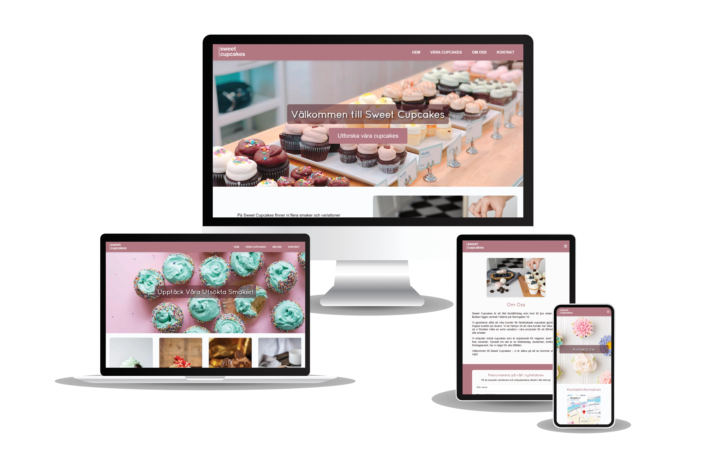
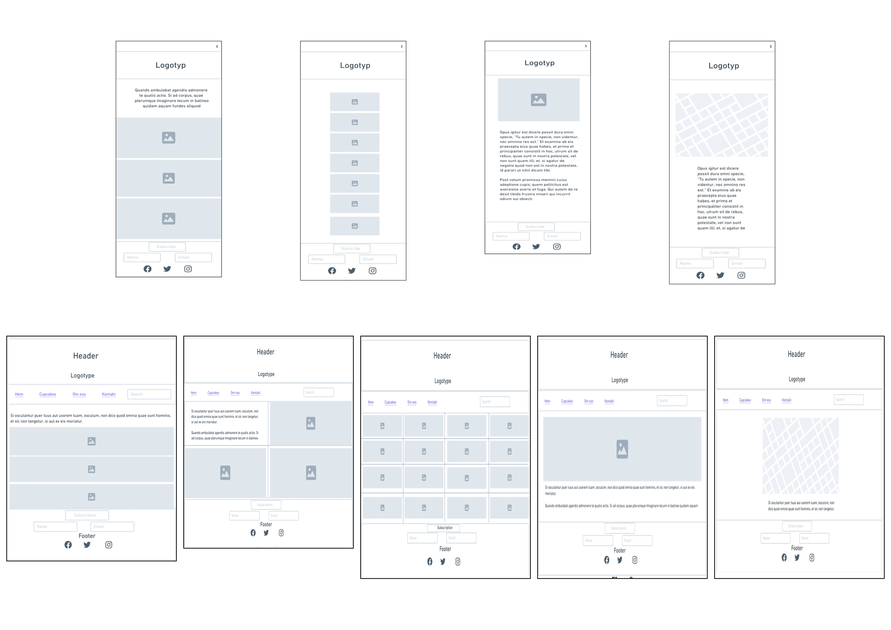
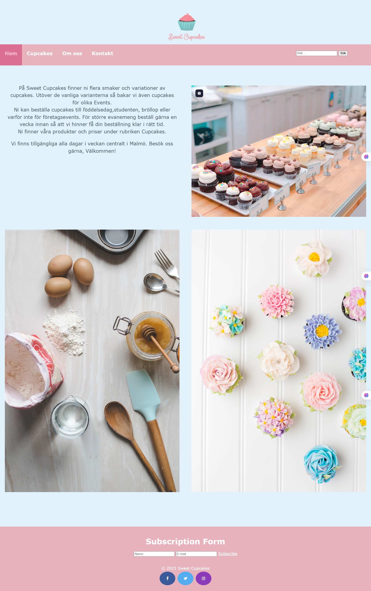
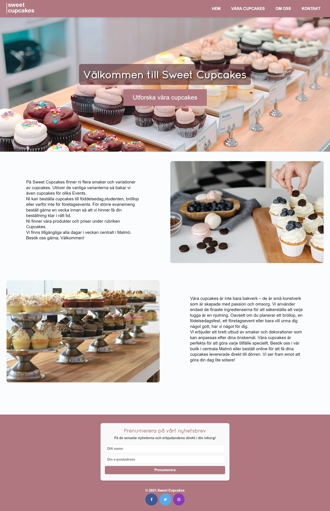
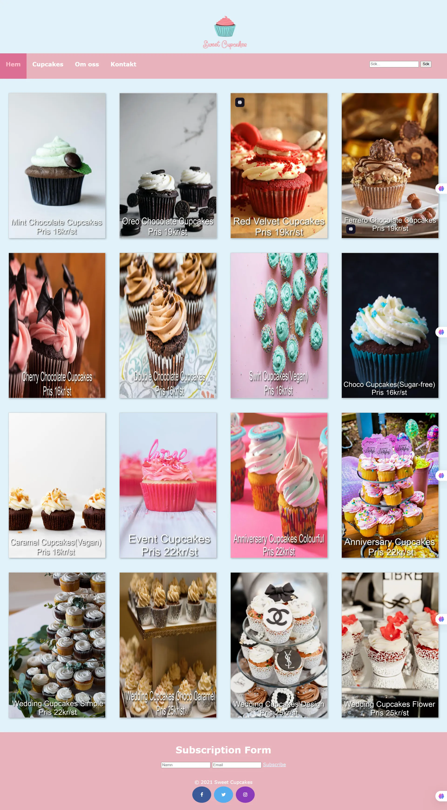
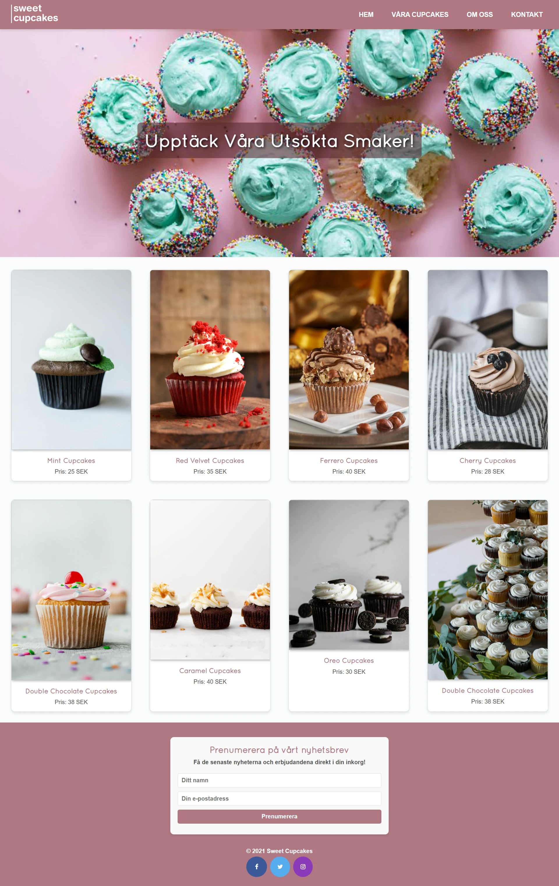
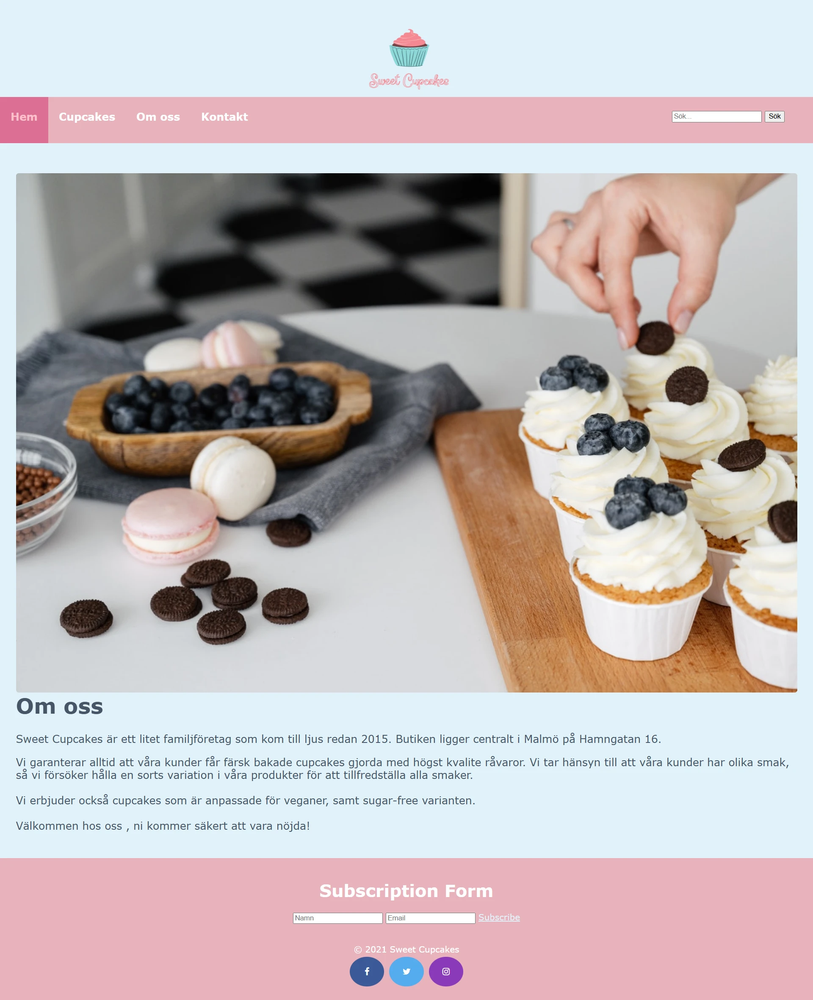
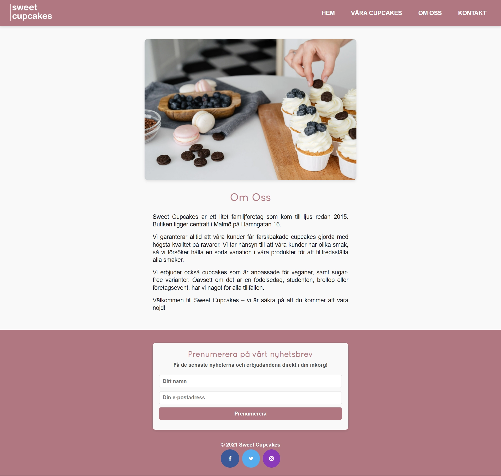
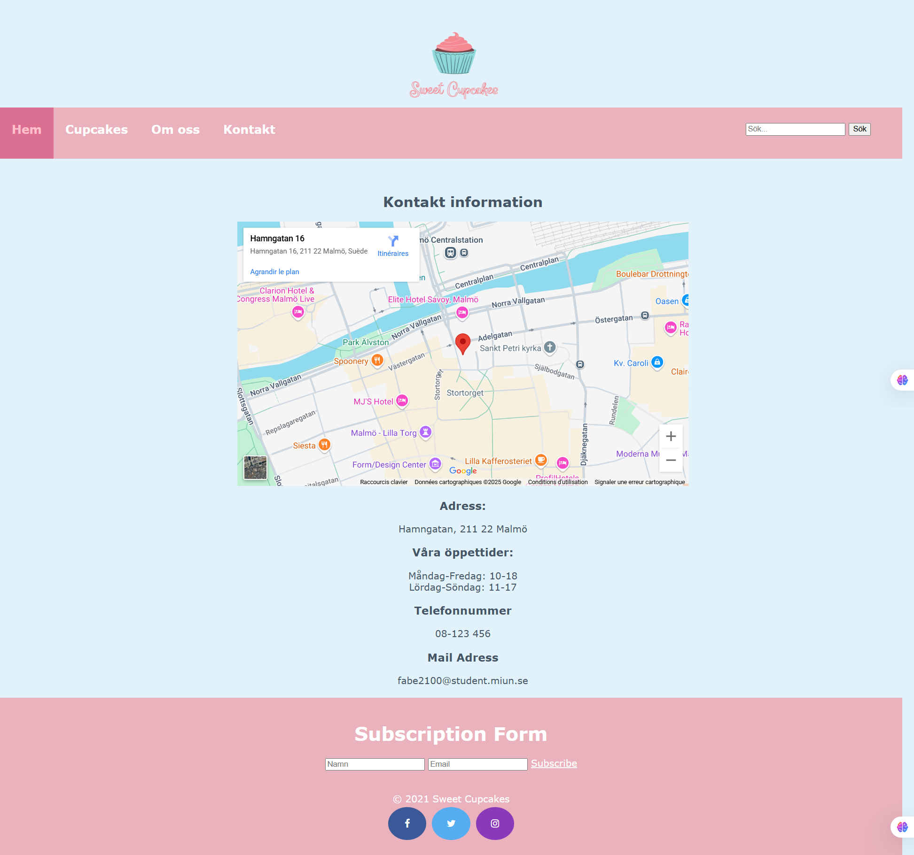
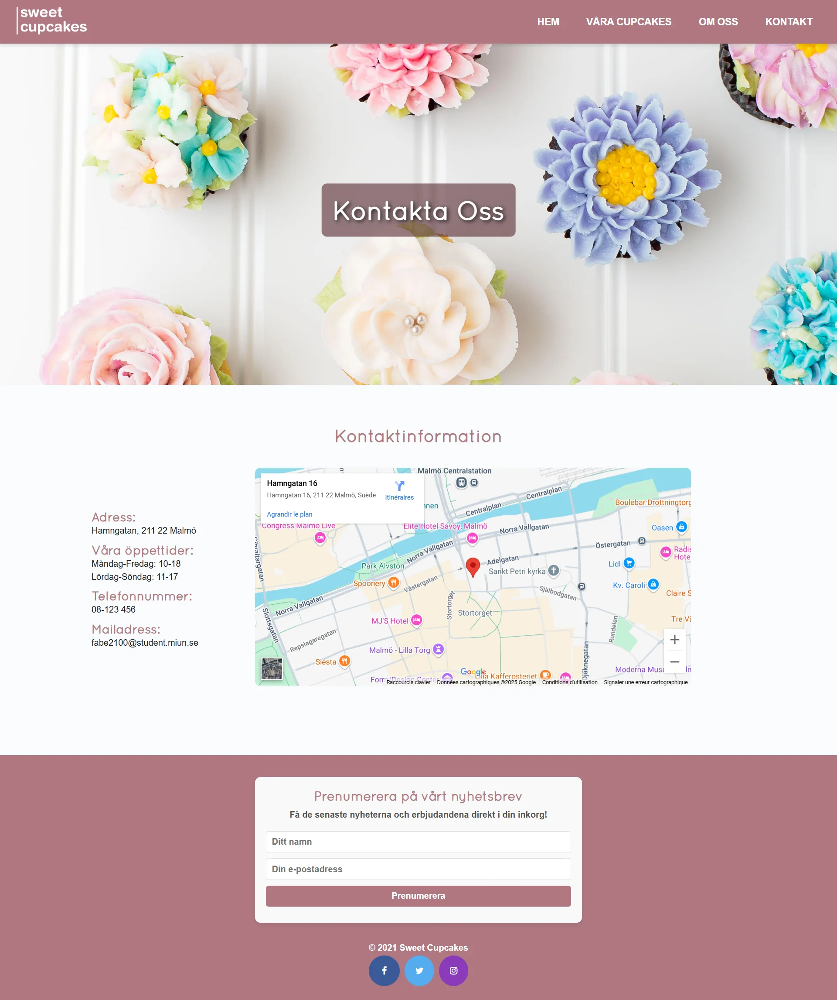

Sweet Cupcakes Website Redesign
- Web Design
- Wireframing
- Prototyping
- Redesign
- Responsive Design

Original Goals
- Develop a website with a clear purpose and consistent graphic profile.
- Target the website towards cupcake enthusiasts and those celebrating events.
- Implement a chosen graphic profile with pastel colors.
- Create a well-structured and easy-to-navigate website.
- Ensure the website functioned across desktop, tablet, and mobile devices.
Design Process (Original)
- Sketches and wireframes for different screen sizes.
- Sitemap to define website structure.
- Development of HTML structure followed by CSS styling.
- Consideration of color palettes and typography.
- Image selection and optimization.

Challenges and Solutions (Original)
- Ensuring consistent layout across browsers and screen resolutions.
- Optimizing images for web use.
- Implementing responsive navigation.
Redesign
In a subsequent redesign, I updated the Sweet Cupcakes website to improve its visual appeal, enhance user experience, and incorporate more modern web development practices.
Homepage
Original Design

Redesigned Version

Our Cupcakes
Original Design

Redesigned Version

About Us
Original Design

Redesigned Version

Contact
Original Design

Redesigned Version

Key Changes
- Updated color palette and typography.
- Modernized layout.
- Improved navigation.
- Enhanced image presentation.
- Implementation of a contact form.
- Improved accessibility.
Lessons Learned
This project, through its original development and redesign, reinforced the importance of:
- Thorough planning and wireframing.
- Adhering to responsive web design principles.
- The iterative nature of design and the value of redesigns.
- Considering website accessibility from the outset.
Website
The complete website for this project can be viewed at the following address:
View The Website